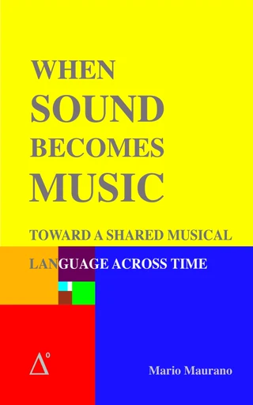

El asesor, y el aula. The advisor, and the classroom.
Dos cosas en una. Mientras escribís, el Coach mira por encima del hombro y avisa: el compás que no cierra, el salto que quedó sin resolver, la nota que ese instrumento no tiene. Y cuando querés aprender, conduce: un nivel de composición entero, de una melodía a una obra a cuatro voces. Avisa, nunca bloquea — y no dice una palabra hasta que vos lo enciendas. Two things in one. While you write, the Coach looks over your shoulder and warns you: the bar that does not close, the leap left unresolved, the note that instrument does not have. And when you want to learn, it leads: a whole level of composition, from one melody to a four-voice piece. It warns, it never blocks — and it does not say a word until you switch it on.
La oreja 🎓 · encenderlo y apagarloThe ear 🎓 · switching it on and off
Junto al nombre de la app, en el Score y en el Keyboard, vive un 🎓 discreto. Despierto, late suave en violeta: el Coach escucha. Un clic lo duerme o lo despierta, y el estado es compartido: lo que apagás en el Score queda apagado en el Keyboard. Con la oreja dormida el Coach no dice nada — es tuyo el momento de pedir compañía. Con clic derecho elegís quién te acompaña —hoy el Suite Coach— y también el idioma ES/EN de toda la suite.Beside the app name, in the Score and in the Keyboard, lives a discreet 🎓. Awake, it pulses softly in violet: the Coach is listening. One click puts it to sleep or wakes it, and the state is shared: what you switch off in the Score stays off in the Keyboard. With the ear asleep the Coach says nothing — when to ask for company is yours to decide. Right-click picks who keeps you company —today the Suite Coach— and also the ES/EN language of the whole suite.
El mensajito no se va: te esperaThe little message does not vanish: it waits for you
Cuando el Coach tiene algo que decir aparece un panelito donde estás trabajando, y se queda: no hay que leer a las apuradas. Se arrastra por su cabecera, recuerda dónde lo dejaste, tiene A− y A+ para el tamaño de letra, y se cierra con la ✕, con un clic afuera o con el 🎓. La tecla ? lo abre, lo cierra y reabre lo último que dijo. En los mensajes del viaje queda fijado y los nuevos se apilan debajo en vez de pisarse. Y el 🎓 del propio mensajito manda ese tema a la ventana del Coach, donde se despliega la minilección completa.When the Coach has something to say, a small panel appears where you are working, and it stays: there is no reading in a hurry. It drags by its header, remembers where you left it, has A− and A+ for the type size, and closes with the ✕, with a click outside or with the 🎓. The ? key opens it, closes it and reopens the last thing it said. For the messages of the journey it stays pinned and new ones stack below instead of overwriting. And the 🎓 in the message itself sends that topic to the Coach window, where the full mini-lesson opens.
Los ? de la interfaz · la explicación donde está el controlThe ? signs · the explanation where the control is
Algunos controles del Score llevan al lado un ? en teal. Un clic y el Coach explica ese control en una frase, con un más ⟶ que abre la página del sitio donde está contado largo. Hoy son cuatro, los que más falta hacían: el gesto de la nota, el gesto del ligado, y el Toque y el Estado que una palabra de expresión le pide al instrumento. Van a ser muchos más. En la app del Coach el ? va derecho: ahí no se edita nada — se lee —, así que el ? de cada bloque abre la sección de esta página que lo cuenta, sin popup de por medio.Some Score controls carry a teal ? beside them. One click and the Coach explains that control in a sentence, with a more ⟶ that opens the page on the site where it is told at length. Today there are four, the ones most needed: the note gesture, the slur gesture, and the Touch and State an expression word asks of the instrument. There will be many more. In the Coach app the ? goes straight there: nothing is edited on that page — it is read — so each block’s ? opens the section of this page that tells it, with no popup in between.
El primer consejo: el compás siempre sumaFirst advice: the bar always adds up
Si tu primera nota entra en el tiempo 3, los tiempos 1 y 2 no desaparecen: el Score los completa con silencios y te lo cuenta ahí mismo, con un solo undo para deshacerlo. Lo mismo con el hueco que dejás antes de una nota dentro del compás. Y si la figura que elegiste no entra en lo que queda, el Coach no la recorta: te dice que se ata con una ligadura a la nota siguiente, que es lo que hace un músico, y no con un puntillo que desborda el compás. Del mensajito, el 🎓 abre la minilección: el compás como caja de tiempos, el silencio gemelo de cada figura, y cómo contar los silencios para entrar a tiempo.If your first note lands on beat 3, beats 1 and 2 do not vanish: the Score fills them with rests and tells you right there, with a single undo to take it back. The same for a gap you leave before a note inside the bar. And if the value you picked does not fit in what is left, the Coach does not trim it: it tells you to tie it to the next note, which is what a musician does, rather than let a dotted value spill over the bar. From the message, the 🎓 opens the mini-lesson: the bar as a box of beats, each value's twin rest, and how to count rests to come in on time.
Fuera de registro, y a quién le queda mejorOut of range, and who it suits better
El Coach conoce el registro de cada instrumento. Si escribís una nota que ese instrumento no tiene, te lo dice en el momento; y al abrir un archivo hace un barrido y avisa una sola vez por caso, sin repetirse. Va un paso más: si la nota cae en una zona débil del instrumento —donde suena pero no habla— te sugiere cuál de los otros la diría mejor.The Coach knows every instrument's range. If you write a note that instrument does not have, it says so at once; and on opening a file it sweeps the piece and warns once per case, without repeating itself. It goes one step further: if the note falls in a weak zone of the instrument —where it sounds but does not speak— it suggests which of the others would say it better.
Las reglas de la melodía · lo que el oído esperaThe melodic rules · what the ear expects
Cuatro avisos, todos dichos como los diría un maestro y no un corrector. El tritono: el salto más difícil de entonar, y la sugerencia de llegar por grado conjunto. La séptima: casi incantable sin una referencia. Recuperar el salto: después de una sexta o más, el oído espera volver por grado conjunto en sentido contrario. Y la tónica: la frase arranca mejor en casa, y cierra volviendo a casa — el aviso del cierre espera a que la última nota complete el compás final, no a que sea la última que escribiste. El umbral está puesto a propósito por encima de la quinta: la propia melodía modelo abre con un salto de quinta y no lo recupera. Y al bajo no se le aplican: un bajo salta octavas por oficio.Four warnings, all of them spoken the way a teacher would, not a spell-checker. The tritone: the hardest leap to pitch, with the suggestion of arriving by step. The seventh: near-unsingable without a reference. Recovering the leap: after a sixth or more, the ear expects to come back by step in the opposite direction. And the tonic: a phrase starts better at home, and closes by coming home — the closing warning waits until the last note completes the final bar, not merely until it is the last one you wrote. The threshold sits deliberately above the fifth: the model melody itself opens with a fifth leap and never recovers it. And they are not applied to the bass: a bass leaps octaves for a living.
El contrapunto · cuando hay dos vocesCounterpoint · once there are two voices
En cuanto escribís una segunda voz, el Coach mira lo que pasa entre las voces: quintas y octavas paralelas, donde las dos voces se funden en una sola; el movimiento directo a una quinta o una octava, que deja la consonancia destapada; y el cruce, cuando la de abajo pasa por arriba de la de arriba. Son las reglas con las que se aprendió a escribir a cuatro voces durante cuatrocientos años, dichas en una frase y sin latín.As soon as you write a second voice, the Coach watches what happens between the voices: parallel fifths and octaves, where the two voices melt into one; direct motion into a fifth or an octave, which leaves the consonance exposed; and crossing, when the lower voice passes above the upper one. These are the rules by which four-voice writing was taught for four hundred years, said in one sentence and without Latin.
Avisan, no bloquean · y la obra decide qué se vigilaThey warn, they do not block · and the piece decides what is watched
Ninguna regla te impide escribir nada: si tu oído prefiere otra cosa, mandás vos. Y qué reglas se vigilan no lo decide el programa: lo decide el archivo — cada obra o ejercicio lleva adentro la lista de reglas, con su severidad y a qué canales se aplican. Un ejercicio del Nivel 1 vigila el contrapunto; una obra tuya puede no vigilar nada. Lo único que de verdad frena la escritura es el candado de la voz modelo de una lección, y hasta ese se puede abrir a conciencia.No rule stops you from writing anything: if your ear prefers something else, you are in charge. And which rules are watched is not the program's decision: it is the file's — every piece or exercise carries the list of rules inside it, with their severity and which channels they apply to. A Level 1 exercise watches counterpoint; a piece of your own may watch nothing at all. The only thing that really holds writing back is the lock on a lesson's model voice, and even that one can be opened deliberately.
R·K y 3·2 · dos informes que se pidenR·K and 3·2 · two reports you ask for
Dos botones del Score que no avisan solos: los llamás cuando querés saber. R·K lee cada voz y dice en qué zona de su instrumento vive la mayor parte de la música, con el carácter que Rimsky-Korsakov le dio a esa zona — es el dictamen de si la línea está escrita donde ese instrumento habla. 3·2 es la métrica sentida: mide dónde cae el bajo, cuenta la obra en 2+2+2 y en 3+3, y te dice si lo que suena contradice la cifra escrita, o si dos canales están tocando una sesquiáltera sin que nadie la haya escrito.Two Score buttons that never speak on their own: you call them when you want to know. R·K reads each voice and says in which zone of its instrument most of the music lives, with the character Rimsky-Korsakov gave that zone — it is the verdict on whether the line is written where that instrument speaks. 3·2 is felt metre: it measures where the bass falls, counts the piece in 2+2+2 and in 3+3, and tells you whether what sounds contradicts the written signature, or whether two channels are playing a sesquialtera nobody wrote.
La ventana del Coach · cuatro pestañasThe Coach window · four tabs
La ventana se abre con el botón ⊞ coach del Score o del Keyboard, y también sola, desde el 🎓 de un mensajito, que le lleva el tema para desplegarlo. Recuerda en qué pestaña la dejaste.The window opens with the ⊞ coach button in the Score or the Keyboard, and also by itself, from the 🎓 in a message, which carries the topic over to be opened in full. It remembers which tab you left it on.
🎓 Coach · la versión larga de lo que te dijo🎓 Coach · the long version of what it told you
Lo mismo que el mensajito, contado sin apuro: el saludo, el aviso en curso y, cuando el tema lo merece, la minilección entera. Del compás que se completa sale la lección del compás; del informe de registros sale la del rango de los instrumentos, con la historia del corno doble en Fa y Si♭ de 1897, que es la razón por la que un rango no es un capricho.The same as the little message, told without haste: the greeting, the current warning and, when the topic deserves it, the whole mini-lesson. The bar that fills itself opens the lesson on the bar; the range report opens the one on instrument ranges, with the story of the 1897 double horn in F and B♭, which is why a range is not a whim.
🎻 Orquestación · el cofre de instrumentos de la suite🎻 Orchestration · the suite's instrument chest
Todos los instrumentos, por secciones —maderas, metales, percusión, arpa y teclados, cuerda, voz, sintetizadores—, cada uno con su rango, su régimen y una barra que muestra dónde tiene fuerza. Un clic abre su ficha: las cuatro zonas de Rimsky-Korsakov con el carácter y la dinámica de cada una, y —cuando existe— cómo se escribe y cómo se toca, con la fuente citada. Es el mismo cofre que usan el Score, el Keyboard y el Register: una sola fuente para toda la suite.Every instrument, by section —woodwinds, brass, percussion, harp and keyboards, strings, voice, synths—, each with its range, its regime and a bar showing where it has strength. A click opens its card: the four Rimsky-Korsakov zones with the character and dynamic of each, and —where it exists— how it is written and how it is played, with the source cited. It is the same chest the Score, the Keyboard and the Register use: one source for the whole suite.
📖 Aula · la carta del nivel y las minilecciones📖 Classroom · the level card and the mini-lessons
La carta del nivel —qué vas a hacer y con qué herramientas— y el botón para continuar tu lección, que abre tu archivo en el Score, lo acomoda y espera a que esté de verdad cargado antes de darte la bienvenida de vuelta. Hoy tiene escrita una minilección, la del compás; anunciadas, las tres que siguen: el rango de los instrumentos, el pulso y el solfeo básico.The level card —what you are going to do and with which tools— and the button to continue your lesson, which opens your file in the Score, arranges it and waits until it is really loaded before welcoming you back. Today one mini-lesson is written, the one on the bar; announced, the three that follow: instrument ranges, the pulse and basic solfège.
🧭 Progreso · el viaje leído de tu propio archivo🧭 Progress · the journey read out of your own file
«El viaje de tu nombre»: el archivo, el nivel, en qué etapa estás, las seis etapas con su marca —cumplida, vigente, pendiente, bloqueada—, la barra de avance, los premios acumulados, la sugerencia de trabajo de la etapa en curso y la bitácora del viaje. Nada de esto está guardado en el programa: se lee del .mmf. Si te llevás el archivo a otra computadora, el viaje va con él.“Your name's journey”: the file, the level, which stage you are on, the six stages with their mark —done, current, pending, locked—, the progress bar, the prizes accumulated, the working suggestion for the current stage and the log of the journey. None of this is stored in the program: it is read from the .mmf. Take the file to another computer and the journey goes with it.
El juego de composición · Nivel 1The composition game · Level 1
Un solo archivo que crece. Nunca cambiás de documento: la misma obra se ensancha etapa a etapa y al final el archivo es el retrato de tu viaje. Las reglas te avisan, no te bloquean — siempre podés escribir lo que quieras.One file that grows. You never change document: the same work widens stage after stage, and in the end the file is the portrait of your journey. The rules warn you; they never block you — you can always write what you want.
Las melodías · sección AThe melodies · section A
La melodía modelo queda fija arriba y vos escribís siete tuyas sobre el mismo molde rítmico. El Coach te avisa si un salto queda sin resolver o si la frase no vuelve a casa.The model melody stays fixed at the top and you write seven of your own on the same rhythmic mould. The Coach warns you if a leap is left unresolved or the phrase does not come home.
La sección BSection B
La obra crece con la B del modelo, con su letra, y vos ensanchás tus siete. La B queda abierta a propósito: es una pregunta larga.The work grows with the model B, lyrics and all, and you widen your seven. B is left open on purpose: it is a long question.
Parte C + cadenzaPart C + cadenza
Reexposición y cadencia. Con esto la obra cierra: A · B · C.Re-exposition and cadenza. With this the piece closes: A · B · C.
Los dúosThe duos
Le escribís el bajo a cada melodía, en clave de Fa: la voz que sostiene la armonía. Acá entran las reglas del contrapunto — quintas y octavas paralelas, cruces. Y al nacer cada dúo el Coach te propone una idea: una quinta, un canon, una inversión, un espejo.You write the bass under each melody, in F clef: the voice that holds the harmony. Counterpoint rules come in here — parallel fifths and octaves, crossings. And as each duo is born the Coach proposes an idea: a fifth, a canon, an inversion, a mirror.
Los tríosThe trios
La segunda voz completa el acorde dentro del marco que ya fijaron la melodía y el bajo.The second voice completes the chord inside the frame the melody and the bass have already fixed.
Los cuartetosThe quartets
El tenor entra en clave de Fa y el bajo baja una octava: cada bloque queda a cuatro voces.The tenor comes in on F clef and the bass drops an octave: each block ends up in four voices.
Cuándo está cumplida una etapaWhen a stage is done
No hay que declarar nada ni apretar ningún botón: la etapa se cierra cuando el último compás de cada voz está lleno —con notas o con silencios, un acorde cuenta una vez—, en las siete melodías de las tres primeras etapas, en los ocho bajos de los dúos, en la segunda voz de los tríos y en el tenor de los cuartetos. Mientras falta, el Coach te va diciendo cuáles ya están y cuáles no, una sola vez por voz terminada.Nothing to declare and no button to press: a stage closes when the last bar of every voice is full —with notes or with rests, a chord counting once—, across the seven melodies of the first three stages, the eight basses of the duos, the second voice of the trios and the tenor of the quartets. While some are missing, the Coach tells you which are done and which are not, once per finished voice.
Y entonces el archivo crece soloAnd then the file grows by itself
Cerrada la etapa, la obra se ensancha sin que hagas nada: entran los compases nuevos, las notas y la letra del modelo y el letrero de la parte, y la presentación se acomoda a lo que viene —el zoom, el teclado en modo de escritura, la banda abierta y el cursor puesto en la primera voz que falta—. Vos seguís escribiendo donde quedaste.With the stage closed, the piece widens without your doing anything: the new bars come in, the model's notes and lyrics and the part label, and the layout settles into what comes next —the zoom, the keyboard in writing mode, the band open and the cursor placed in the first voice still missing. You carry on writing where you left off.
El candado de la voz modeloThe lock on the model voice
La melodía modelo está sellada: si intentás escribir encima, el Coach te explica por qué no te deja en vez de dejarte adivinar. Las voces de referencia de cada bloque también se sellan a medida que las usás como base, y ésas sí se pueden abrir a conciencia: cuando lo hacés, el Coach te avisa lo que estás por pagar — que las voces que escribiste encima se pensaron contra la versión anterior.The model melody is sealed: if you try to write over it, the Coach explains why it will not let you rather than leaving you to guess. The reference voices of each block are sealed too as you use them as a base, and those ones can be opened deliberately: when you do, the Coach tells you what you are about to pay — that the voices you wrote above were thought against the previous version.
Las ideas que propone · con tus propias notasThe ideas it proposes · with your own notes
Al nacer cada dúo el Coach propone una de cuatro: imitación a la quinta, canon, inversión o espejo —el retrógrado—, una por dúo, en el orden en que los vas abriendo. Y no lo explica en abstracto: te lo cuenta sobre tus primeras cuatro notas, nombradas en do-re-mi. Es una propuesta, no una tarea: no queda anotada en ninguna parte.As each duo is born the Coach proposes one of four: imitation at the fifth, canon, inversion or mirror —the retrograde—, one per duo, in the order you open them. And it does not explain it in the abstract: it tells it over your own first four notes, named in do-re-mi. It is a proposal, not homework: it is not recorded anywhere.
La estrella, y las que se acumulanThe star, and the ones that accumulate
Cada etapa cerrada deja una ☆ blanca; las seis, una ★ dorada; cada cinco doradas, un laurel. La dorada no es un adorno: se guarda dentro del archivo con tu nombre, el ejercicio y la fecha, se acumula entre ejercicios, y además se le agrega a tu nombre de autor — así queda firmada en cada copia que saques de la obra.Every stage closed leaves a white ☆; all six, a golden ★; every five golden ones, a laurel. The golden star is not decoration: it is saved inside the file with your name, the exercise and the date, it accumulates across exercises, and it is also appended to your author name — so it is signed into every copy of the piece you take out.
La bitácora viaja en la obraThe log travels in the piece
Cada hito del viaje queda anotado con su fecha dentro del .mmf, no en el programa: la etapa que cerraste, el premio, el candado que abriste. Guardás como, te llevás el archivo, y el viaje va adentro. Tu nombre se escribe una vez y lo heredan todos los ejercicios que abras después.Every milestone of the journey is recorded with its date inside the .mmf, not in the program: the stage you closed, the prize, the lock you opened. Save as, take the file with you, and the journey is inside it. Your name is written once and every exercise you open later inherits it.
Tu melodía es una entre billonesYour melody is one among trillions
El molde de la sección A tiene catorce casillas. Con los ocho grados de la octava son 8¹⁴ melodías posibles —más de cuatro billones— y la obra entera da un número de treinta y ocho cifras, del orden de los átomos de toda la humanidad junta. El Coach no lo tiene escrito: lo calcula de tu propio archivo, y lo dice al abrir el nivel. Con clic derecho en el título de la obra volvés a leerlo cuando quieras. Cada elección tuya es un acto de identidad.The mould of section A has fourteen cells. With the eight degrees of the octave that is 8¹⁴ possible melodies —over four trillion— and the whole piece gives a thirty-eight-digit number, of the order of the atoms in all of humanity together. The Coach does not have it written down: it computes it from your own file, and says it when the level opens. Right-click on the title of the piece to read it again whenever you like. Every choice you make is an act of identity.
Lo que vieneWhat is coming
El pulso · hoy metrónomo, mañana Coach rítmicoThe pulse · a metronome today, a rhythmic Coach tomorrow
En el Keyboard hay un pulso que se ve y se oye: arranca y para, tiene su luz, su término italiano —de Largo a Presto—, el click con su volumen y su tono, y tap, que toma el tempo de tus propios golpes. Puede latir con el tempo de la obra que está abierta en el Score, y ahí manda la obra. Lo que todavía no hace es escucharte: comparar lo que tocás contra el pulso y decirte dónde te adelantaste. Esa es la semilla del Coach rítmico, y es lo que sigue.In the Keyboard there is a pulse you can see and hear: it starts and stops, it has its light, its Italian term —Largo to Presto—, the click with its volume and its pitch, and tap, which takes the tempo from your own tapping. It can beat with the tempo of the piece open in the Score, and there the piece is in charge. What it does not do yet is listen to you: compare what you play against the pulse and tell you where you ran ahead. That is the seed of the rhythmic Coach, and it is what comes next.
Otros coaches · Salieri espera su turnoOther coaches · Salieri awaits his turn
El Suite Coach es paciente y guía a quien no sabe música. Pero el carácter del que te acompaña es un dato, no el programa: el mismo aviso puede decirse con otra voz. Salieri ya está escrito de punta a punta —saludo, avisos, reglas melódicas y contrapunto, todo con su temperamento— y está desactivado a propósito, esperando su turno en el menú.The Suite Coach is patient and guides someone who does not know music. But the character of whoever keeps you company is data, not the program: the same warning can be said in another voice. Salieri is already written end to end —greeting, warnings, melodic rules and counterpoint, all in his own temper— and is deliberately switched off, waiting his turn in the menu.
Para profesores: el curso, o el tuyoFor teachers: the course, or your own
Hay dos maneras de usar el aula. La primera es seguir el curso: el alumno abre la Lección 0 desde el Aula con su nombre, y a partir de ahí su archivo es su cuaderno — el nivel, la etapa, la bitácora y los premios viajan adentro del .mmf, no en ningún servidor nuestro. Para ver cómo va, le pedís el archivo y lo abrís.There are two ways to use the classroom. The first is to follow the course: the student opens Lesson 0 from the Classroom with their name, and from then on their file is their notebook — the level, the stage, the log and the rewards all travel inside the .mmf, not on any server of ours. To see how they are doing, you ask for the file and open it.
La segunda es escribir tus propios ejercicios, que es para lo que el programa sirve de verdad en una clase de armonía, contrapunto o composición. Armás el ejercicio en el Score como cualquier partitura: el modelo en un canal —un bajo cifrado, un cantus firmus, una melodía para armonizar— y los canales vacíos donde va a escribir el alumno. Guardás con SAVE y repartís ese .mmf: por correo, o colgado en la página del colegio. Cada alumno lo abre desde MENU FILES, trabaja encima y guarda su propia copia; el tuyo no se toca.The second is to write your own exercises, which is what the program is really for in a harmony, counterpoint or composition class. You build the exercise in the Score like any other score: the model in one channel — a figured bass, a cantus firmus, a melody to harmonise — and empty channels where the student will write. You save with SAVE and hand out that .mmf: by email, or posted on the school’s own page. Each student opens it from MENU FILES, works on top of it and saves their own copy; yours is never touched.
El archivo pesa poco —un ejercicio de dieciséis compases son unos pocos kilobytes— así que no hace falta comprimir nada; el zip sirve cuando repartís una colección entera. Y conviene entregarlo ya titulado: el Score Info lleva título, subtítulo, autor y copyright, eso viaja adentro del archivo y sale impreso al pie de la hoja.The file is small — a sixteen-bar exercise is a few kilobytes — so there is nothing to compress; a zip is for handing out a whole collection. And it is worth handing it over already titled: Score Info holds title, subtitle, author and copyright, all of which travel inside the file and print at the foot of the page.
Lo que gana el alumno no es un editor más: es oírse afinado. Las quintas, las terceras y las sensibles suenan donde deben sonar, y un error de conducción se escucha antes de que nadie lo marque con lápiz rojo.What the student gains is not one more editor: it is hearing themselves in tune. Fifths, thirds and leading notes sound where they should, and a voice-leading mistake is heard before anyone marks it in red pencil.
Los niveles que siguenThe levels that follow
Hoy hay un nivel, el 1, y está completo. Lo que ya está construido y no depende del nivel es el aula entera: las etapas que se verifican solas, el archivo que crece, el candado, los premios, la bitácora, la cuenta del juego. Sobre eso se montan los niveles siguientes.Today there is one level, Level 1, and it is complete. What is already built and does not depend on the level is the whole classroom: stages that verify themselves, the file that grows, the lock, the prizes, the log, the arithmetic of the game. The levels that follow are mounted on that.
El libroThe book

When Sound Becomes Music · Cuando el sonido se vuelve música
Hacia un lenguaje musical compartido a través del tiempo, de Mario Maurano. El porqué detrás de la suite: la geometría del sonido, los intervalos pitagóricos y las melodías antiguas —de la octava, la quinta y la cuarta al epitafio de Seikilos—, donde la teoría se vuelve experiencia.Toward a Shared Musical Language Across Time, by Mario Maurano. The why behind the suite: the geometry of sound, the Pythagorean intervals and the ancient melodies —from the octave, fifth and fourth to the Seikilos epitaph—, where theory becomes experience.
Con un sitio complementario de herramientas interactivas: calculadora de intervalos, tablas de frecuencia y ejercicios para descargar.With a companion site of interactive tools: an interval calculator, frequency tables and downloadable exercises.
El libro (Amazon · EN/ES) →The book (Amazon · EN/ES) → Sitio complementario →Companion site →